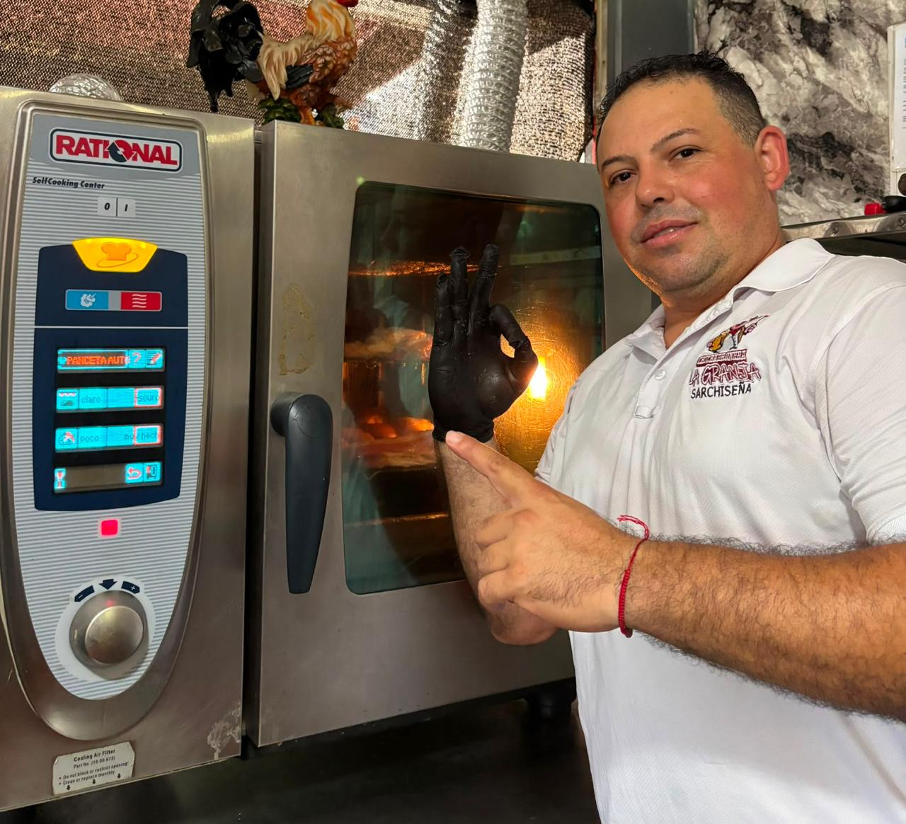

Nuestra historia
Una familia, un chicharrón
El lugar que muchos en Sarchí conocen con cariño como "Happy Corner".

Sarchí Norte
De carnicería a chicharronera
Desde 2009, la Chicharronera La Granja Sarchiseña ha estado en Sarchí Norte. Lo que comenzó como una carnicería tradicional se fue transformando con los años en un bar-restaurante, hasta convertirse en la chicharronera que hoy conocen los clientes de la zona, conocida cariñosamente como "Happy Corner".
El chicharrón se prepara fresco y con dedicación, manteniendo las recetas y el sabor que caracterizan al lugar. Es un negocio familiar donde cada plato refleja el trabajo y la atención de quienes lo atienden.